Texas Venture Fest Houston 2026 · The AI Edition · October 1
AI developer
ecosystems.
Fresh off OpenAI DevDay: a practical map of where agents actually get built now.
Brad GrouxCo-Founder • CEO • Builder • Speaker • AI Educator & EvangelistOpenAI Certified API Expert • ChatGPT Expert • Codex Expert
Follow
First, what are we talking about
A model is a demo.
An ecosystem is a business.
The modelWeights and APIs. Commoditizing fast — table stakes, not the moat.
The harnessThe agent loop: plan, act, verify, remember. Where the work actually happens.
The toolsIntegrations, skills, and access — local and cloud. This is the leverage.
The trustDistribution, security, and who vouches for the work. This is what enterprises buy.
The map, October 2026
Five ecosystems.
One operator.
OpenAIFrontier models, Codex, and the DevDay platform. The gravity well everything else orbits.
OpenClawLocal-first control plane. My machine runs my agents — durable context, bounded access, visible workflow.
BuzzOpen-source tooling I contribute to and teach.
MuseMeta’s personal agent. General-purpose help that works for one person: you.
GitHubWhere the developers already are — distribution plus the Secure Open Source Fund backing maintainers.
Straight from San Francisco
DevDay, day after.
What was announced
- Plan changes: GPT-6.1 Sol at a fifth of Astra's token price, a new Ultrafast tier, a $500/mo Pro 500 plan, Plus/Pro allowances spendable in 16 partner tools.
- Dots: always-on agents that work on your behalf 24/7, 4,000+ apps.
- Spaces: the shared team workspace.
What I tested
- Dots: caught the Dots-in-Teams reveal live — a persistent agent working real Slack context.
- Voice calls with Dots are great for planning and handoffs.
- Spaces: watched it build interactive visualizations off shared team knowledge.
What changes
- Dots is a game changer — the agent moves from chat session to persistent worker.
- The OpenClaw-like agent comes to Codex.
- Spaces gives you and your teammates a place to collaborate.
- Own the method, rent the tool.
The builder's side
Codex: your agent, everywhere.
“Dots made agents always-on. Spaces made them shared. Codex is the builder's side of the same shift — the agent leaves the chat box and runs where your work lives.”
Every surface — your machine, your phone, or the cloudReusable team environments — build once, the whole team runs itAgents API in public beta — the managed Codex harness, computer use included
Distribution and trust
GitHub is still
where developers live.
Secure Open Source FundCohort member. Funding that treats maintainers like infrastructure, not charity.
GitHub Build, June 2026Creator demo at GitHub HQ — OpenClaw on stage in front of the ecosystem.
Microsoft Build OSS ZoneTwo days on the conference floor with the people who ship open source.
Why it matters hereThe largest developer distribution on earth — and it vouches for the work.
The operator’s rule
Own the method.
Rent the tool.
Pick ecosystems the way an operator picks vendors. Your process, your data, and your judgment are the assets — the models and the tooling are rented.
Own: process, data, judgmentRent: models, tools, platformsVerify: everything that touches production
Where this goes
Verifiable work,
human in the loop.
The next moat isn’t the model.
It’s the workflow you can audit.
Agents that show their work earn enterprise trust. Black boxes don’t — no matter how good the demo looks.
Your next move
Ship one thing
in public.
Pick one ecosystem from this map.
Build one useful thing with it this week.
Publish the trail.Start small, think big.
Follow